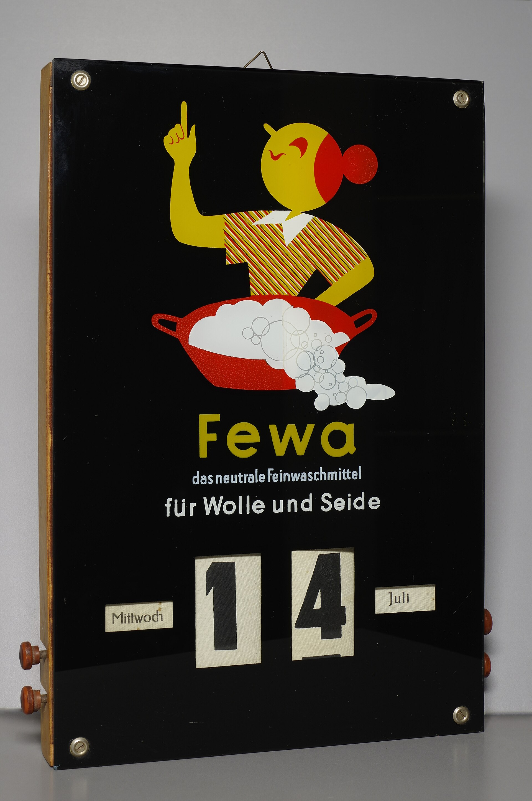

DICAS DE ESTUDO
Organização dos estudos
Um jeito simples de planejar a semana, cuidar dos materiais e evitar que as tarefas se acumulem.
Introdução
Organizar os estudos não é preencher cada minuto nem seguir um plano perfeito. É saber o que precisa ser feito, escolher prioridades e reservar tempo possível para cada tarefa. Um planejamento realista reduz a sensação de estar perdido e deixa espaço para descanso, escola, família e imprevistos.
Comece observando seus horários e compromissos atuais. A organização deve servir à sua vida; não precisa copiar a rotina de outra pessoa.
1. Veja a semana antes de planejar
Anote aulas, atividades fixas, prazos, provas e compromissos. Depois, marque os períodos em que costuma ter mais energia e os horários que precisam ficar livres. Inclua deslocamentos e refeições: eles também ocupam tempo. Se usa agenda de papel ou digital, escolha uma só como referência principal para não espalhar lembretes.
Para evitar acúmulos, registre a tarefa assim que souber dela e transforme trabalhos longos em etapas: pesquisar, fazer um rascunho, revisar e entregar. Uma etapa pequena é mais fácil de encaixar do que “fazer o trabalho inteiro” na véspera.

2. Monte um cronograma que caiba na realidade
Comece com blocos de tempo modestos. Por exemplo: 30 a 45 minutos de atividade e uma pausa curta. Ajuste a duração ao seu foco e à tarefa. Reserve horários de recuperação para atrasos ou dúvidas e não ocupe todos os espaços livres: um plano sem margem costuma desmoronar no primeiro imprevisto.
Defina o resultado de cada bloco. Em vez de “estudar ciências”, escreva “reler o resumo de ecossistemas e responder cinco questões”. No fim, confira o que foi concluído e mova o que faltar para outro momento, sem transformar o atraso em motivo para desistir da semana.

3. Equilibre matérias difíceis e fáceis
Alterne o tipo de esforço. Se matemática exige muita concentração, faça uma sessão dela quando estiver mais disposto e depois mude para uma tarefa de leitura ou revisão. Não deixe uma matéria difícil sempre para o fim; divida o assunto em partes e distribua as práticas durante a semana. Inclua revisões curtas das matérias que parecem fáceis, para não esquecê-las.
Priorize por prazo, importância e dificuldade. Uma tarefa urgente pode vir primeiro, mas uma prova distante também merece pequenos blocos regulares para não virar uma emergência.

4. Cadernos, listas e ambiente
Use divisórias, títulos e datas para encontrar anotações com rapidez. Ao final da aula, marque dúvidas e tarefas pendentes. Uma lista diária deve ser curta: escolha de uma a três prioridades e acrescente itens menores se houver tempo. Riscar uma etapa concluída ajuda a visualizar o progresso.
Prepare um local com iluminação confortável, material necessário e o mínimo de distrações possível. Se não houver um espaço exclusivo, uma caixa ou pasta com os itens de estudo já ajuda a organizar e guardar tudo depois. Não é preciso ter uma mesa perfeita para aprender.
5. Exemplo de cronograma semanal
Este exemplo é apenas um ponto de partida. Ajuste-o aos horários da escola, às tarefas e ao descanso de cada estudante.
- Segunda: revisar anotações do dia e praticar matemática por 30 minutos.
- Terça: leitura de história e registro de dúvidas; separar material do trabalho.
- Quarta: resolver exercícios de matemática e revisar vocabulário de inglês.
- Quinta: avançar uma etapa do trabalho e fazer revisão curta de ciências.
- Sexta: conferir prazos, terminar tarefas pendentes e planejar a próxima semana.
- Fim de semana: reservar um bloco breve para revisão se necessário e manter tempo livre.
Se um dia ficar cheio, transfira uma tarefa para um espaço de recuperação. Evite “pagar” o atraso retirando todo o descanso.
6. Erros comuns e como corrigir
- Planejar demais: reduza o número de tarefas e estime o tempo com base no que costuma levar.
- Não registrar prazos: anote a data e crie lembretes para etapas intermediárias.
- Deixar tudo para a véspera: comece com dez minutos ou uma pequena parte no mesmo dia em que recebeu a tarefa.
- Confundir estar ocupado com aprender: intercale leitura com perguntas, exercícios e explicações feitas de memória.
- Ignorar pausas: inclua descanso no plano para conseguir manter o ritmo.
Resumo
Registre compromissos, escolha prioridades, divida tarefas grandes, alterne matérias e deixe margem para imprevistos. Mantenha materiais e ambiente funcionais e revise o plano uma vez por semana. Um cronograma útil é aquele que você consegue ajustar e retomar.
Conclusão
Comece com uma mudança pequena, como anotar os prazos ou separar o material da próxima aula. Com o uso, você descobrirá quanto tempo suas tarefas realmente pedem. Organização é uma habilidade que se aprende: faça ajustes sem exigir perfeição de si mesmo.